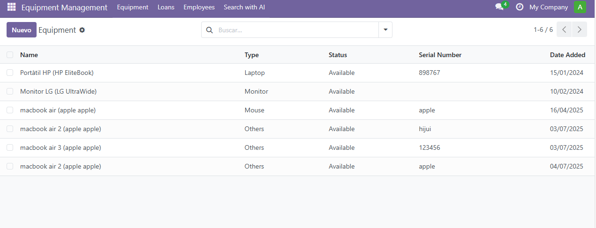

Equipment Management
- Track devices such as laptops, monitors, phones, tablets...
- Store brand, model, supplier, purchase date, specs, and notes
- QR Code per equipment for quick access and inventory
- Assign equipment to employees and view change history
